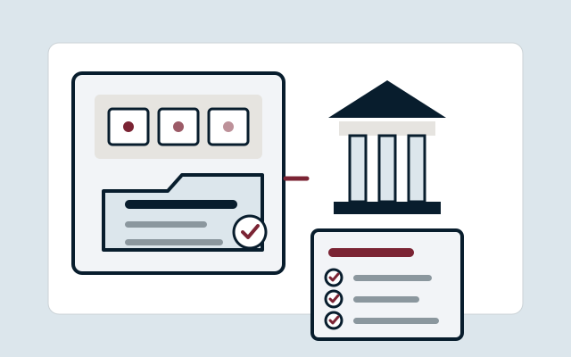

Standard boundary
One bounded project fee unit, with the exact quantitative boundary confirmed from the agreed scope before commitment.
Charity & public-sector services · HOC-050
Modernise bounded administrative processes with clear SOPs and proportionate digital-tool recommendations.
For: Public-sector teams

The need
Legacy administrative processes create avoidable manual effort, duplication and inconsistency.
The service
Modernise bounded administrative processes with clear SOPs and proportionate digital-tool recommendations.
The work is delivered as a bounded professional service. The exact scope is agreed before commitment and does not transfer the customer’s own decision-making authority to House of Carol.
Deliverables
Method
Scope, inputs and timing
One bounded project fee unit, with the exact quantitative boundary confirmed from the agreed scope before commitment.
Timing is confirmed after complete inputs and scope fit; no unsupported SLA is implied.
Boundaries
No guarantee of a particular business, funding, compliance, procurement, learning, revenue, productivity or other outcome is created beyond the exact bounded product record and evidence available.
Any wider or materially different work requires explicit re-scoping and may trigger additional specialist assurance.
Specialist boundary
House of Carol does not assume statutory, constitutional, trustee, regulator or legal authority. Exact public-body, charity, privacy, security or governance questions are routed to the competent authority or specialist when triggered.
Evidence and availability
The bounded service design has internal delivery/QA evidence. No customer demand, accepted-price evidence, live outcome, repeatability or revenue is claimed.
Internal, synthetic, planning-price and Customer 000 evidence is not presented as buyer demand, willingness to pay, accepted price, live customer value, repeatability, revenue or external proof.
Related navigation